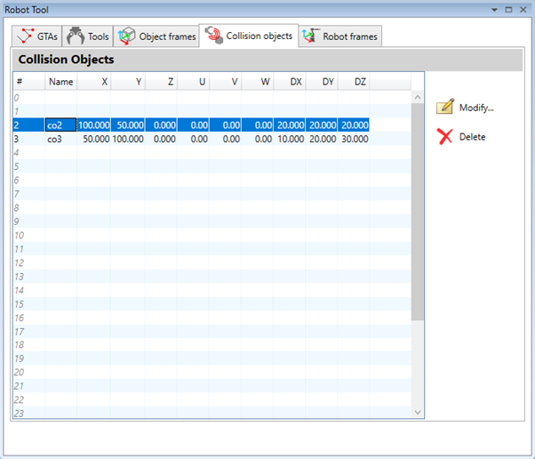
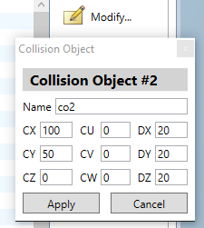

A collision object specifies the Oriented Bounding Box (OBB) around the real object in a scene and is used by collision detect algorithm. Collision objects are presented as a set of 9 values:
- X, Y, Z – for the coordinates of the centre of OBB in millimetres
- U, V, W – for the angular orientation of OBB in degrees.
- DX, DY, DZ – for the distance from centre to sides of OBB in millimetres
An array of 32 collision object definitions is available for use to all programs. A unique name can be assigned to each collision object to be used to identify and reference it in programs.
The robot tool displays a list of already defined collision objects.

By pressing the
 button the operator can
directly type-in a new collision object or modify the coordinates or the name
of a previously defined entry.
button the operator can
directly type-in a new collision object or modify the coordinates or the name
of a previously defined entry.

By pressing the ‘Apply’ button the changes are stored to the controller.
By pressing the
 button the data stored in
selected collision object entries will be deleted and they will become empty.
button the data stored in
selected collision object entries will be deleted and they will become empty.